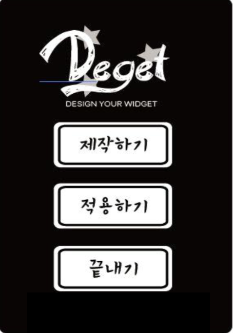
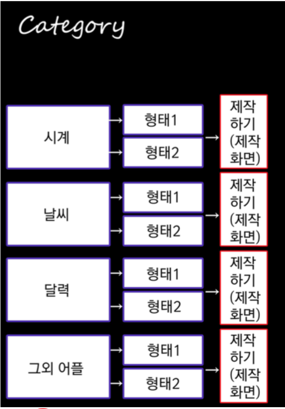
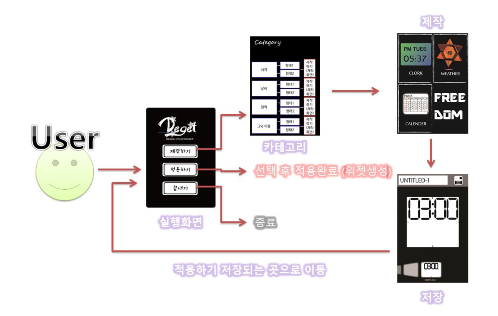

2014-05-29 고등학교 1학년
Deget
App Idea
Stac2014 출품작
인원 : 4명


DEGET (디젯)
(아이디어 제안서)
‘평범한 위젯들과 못생긴 위젯들은 더 이상 쓰기싫은데…
어디 이쁘고 맘에드는 위젯없을까??’
이제는 불편하게 찾아서 쓰지 마세요. 사용자가 마음대로
직접 위젯을 디자인하고 만들어 쓸 수 있게 도와주는 앱!
Design Widget DEGET(디젯)